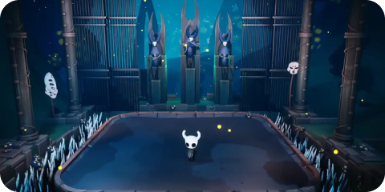
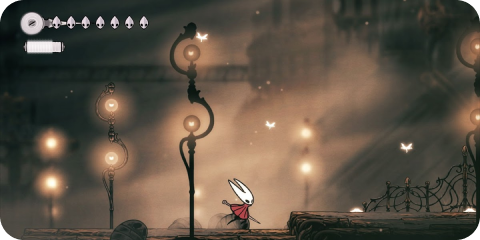
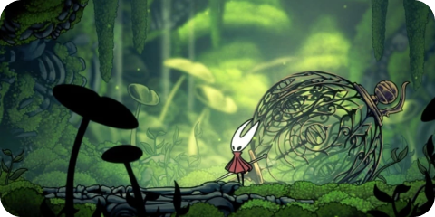

“Hollow Knight” é um jogo de ação e aventura desenvolvido pela Team Cherry que cativou os jogadores com sua atmosfera envolvente e jogabilidade desafiadora. No vasto mundo de Hallownest, os jogadores assumem o controle de um cavaleiro silencioso, explorando paisagens deslumbrantes e sombrias. A narrativa é sutil, contada principalmente através do ambiente e dos personagens não jogáveis, proporcionando uma experiência imersiva que encoraja a exploração minuciosa.
A ambientação do jogo é notável, com cenários que variam desde florestas densas e cavernas escuras até cidades em ruínas. Cada área possui sua estética própria única, acompanhada por uma trilha sonora envolvente que complementa perfeitamente o clima melancólico do jogo. A arte em estilo “metroidvania” é deslumbrante, com detalhes minuciosos que dão vida ao mundo misterioso de Hollow Knight.
A jogabilidade é desafiadora e recompensadora, com combates precisos e movimentos fluidos. Os jogadores enfrentaram inimigos variados, cada um com padrões de ataque distintos, exigindo habilidade e estratégia. A progressão do personagem é alimentada pela descoberta de novas habilidades e atualizações, incentivando a exploração de áreas anteriormente inacessíveis.
Em resumo, “Hollow Knight” é uma obra prima que combina uma narrativa envolvente, uma atmosfera rica e uma jogabilidade desafiadora. O jogo conquistou uma base de fãs dedicados e continua a ser celebrado como um exemplo notável do gênero “metroidvania”.
Informações adicionais:
Data de lançamento: 24 de fevereiro, 2017
Desenvolvedor: Team Cherry
Editora: Team Cherry
Marcadores do jogo: Plataformas e precisão, 2D